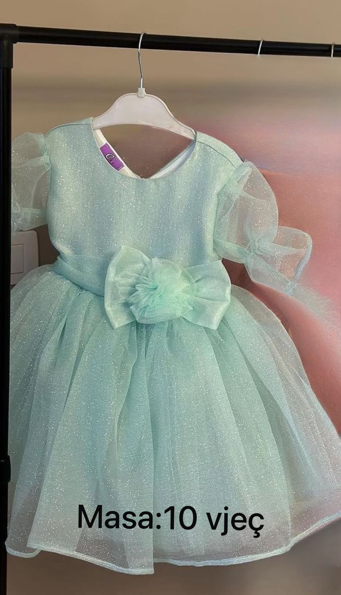

Faqja e konfirmimit të produktit

A është produkti sipër ai që keni zgjedhur?
Po
Jo
Konfirmoni masën:
Po
Jo
Konfirmoni ngjyrën në qoftë se është ajo në foto:
Po
Jo
Konfirmimi i veprimeve
Konfirmo porosinë